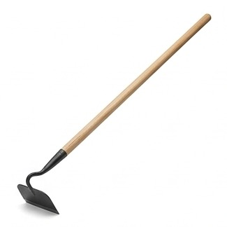
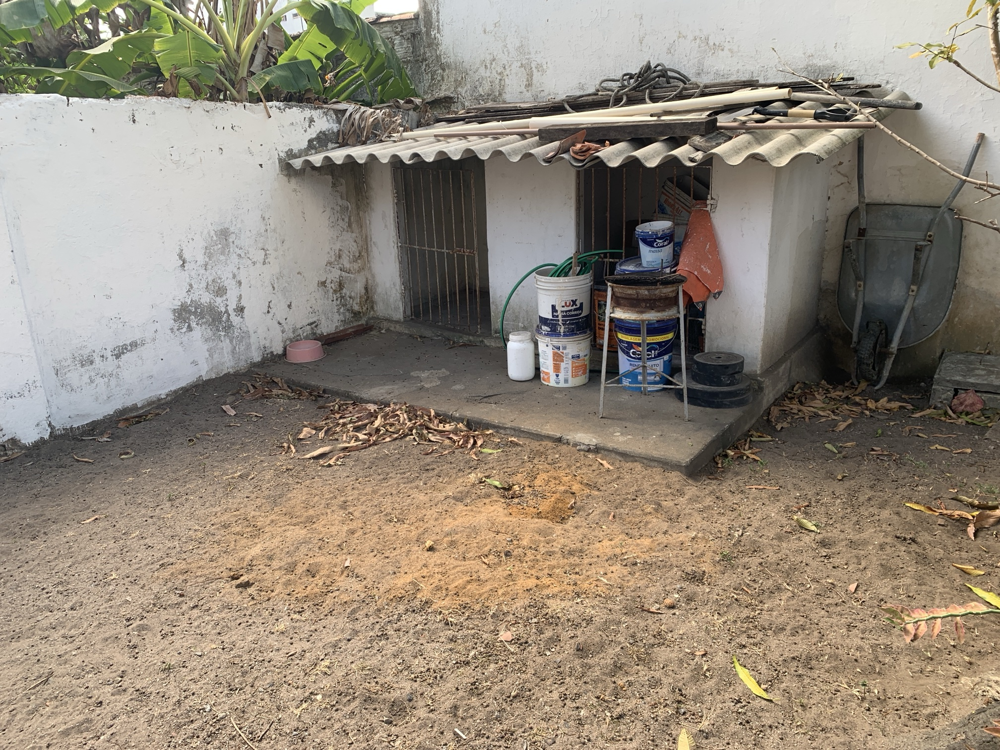
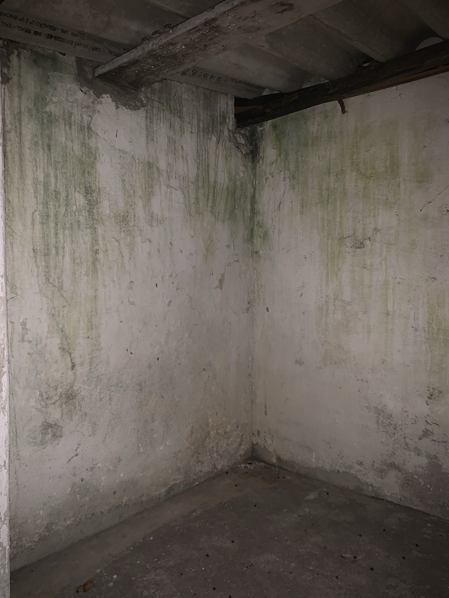

Só para a Etapa 0 Materiais, Ferramentas e EPIs que você vai usar aqui
Não precisa de furadeira, serrote nem estaca ainda — nesta etapa é só limpeza, tampar buracos e passar cal:

Água Sanitária (2 L) + Cal Hidratada (4 kg)
Atenção: peça cal hidratada (ou cal de pintura), NÃO cal virgem!

Cimento + Areia (pouquinho)
Só ~1/3 de balde de massa (3 areia : 1 cimento) p/ tampar os buracos das madeiras velhas.

2 Baldes comuns
1 p/ diluir água sanitária; 1 p/ misturar a cal com água.

Luvas de borracha/obra
Obrigatórias p/ mexer com cal, cimento, água sanitária e fezes de rato.

Máscara PFF2
Protege do pó da cal e de qualquer poeira de fezes de rato.

Em casa: Vassoura dura + Mangueira + Trincha/Rolo
Escova/vassoura piaçava p/ esfregar o limo verde; broxa ou rolo barato p/ passar a cal.
Passo a Passo Animado Do cenário atual (suas fotos) até a base pronta
Suas Fotos Reais O que olhar e fazer em cada canto


